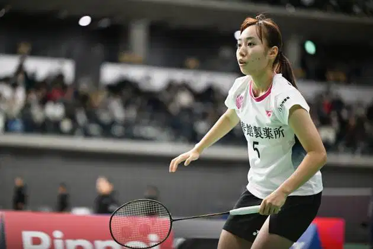
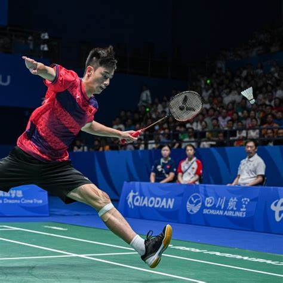
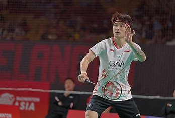

Top Players
Shi Yuqi: Currently ranked No. 1 in men's singles.
Anders Antonsen: Ranked No. 2 in men's singles.
Jonatan Christie: Ranked No. 3 in men's singles.
Lee Chong Wei
Lee Chong Wei is a Malaysian former professional badminton player. He was ranked first worldwide for 349 weeks, including a 199-week streak from 21 August 2008 to 14 June 2012. He is a triple silver medalist at the Olympic Games and widely regarded as one of the greatest badminton players of all time.
Carolina Marin
Carolina Marín is a Spanish badminton player. She is an Olympic Champion, three-time World Champion, and eight-time European Champion. She once held the No. 1 BWF World Ranking in women's singles for a total of 66 weeks.
Rising Stars

Hina Akechi: A promising young player from Japan who has shown potential to be one of the next big things in badminton.

Teh: Singapore’s rising star who recently won the Thailand Masters.

Wang Zhengxing: A new talent from China with victories at the Ruichang China Masters.
Player Profiles
#### Lee Chong Wei
- **Full Name**: Lee Chong Wei
- **Country**: Malaysia
- **Date of Birth**: October 21, 1982
- **Achievements**:
- 3-time Olympic Silver Medalist (2008, 2012, 2016)
- 4-time All England Open Champion
- 5-time Commonwealth Games Gold Medalist
- Held the World No. 1 ranking for 349 weeks
- **Career Highlights**:
- Known for his speed, agility, and precision on the court.
- Regarded as one of the greatest badminton players of all time.
- **Personal Background**:
- Born in Bagan Serai, Perak, Malaysia.
- Started playing badminton at the age of 11.
#### Carolina Marin
- **Full Name**: Carolina Marín Martín
- **Country**: Spain
- **Date of Birth**: June 15, 1993
- **Achievements**:
- Olympic Gold Medalist (2016)
- 3-time World Champion (2014, 2015, 2018)
- 5-time European Champion (2014, 2016, 2017, 2018, 2022)
- Held the World No. 1 ranking for 66 weeks
- **Career Highlights**:
- Known for her aggressive playstyle and mental toughness.
- First non-Asian to win multiple World Championships.
- **Personal Background**:
- Born in Huelva, Spain.
- Started playing badminton at the age of 8.
#### Hina Akechi
- **Full Name**: Hina Akechi
- **Country**: Japan
- **Date of Birth**: March 27, 2005
- **Achievements**:
- Junior World Champion (2023)
- Winner of the Japan National Championships (2024)
- **Career Highlights**:
- Known for her strong net play and strategic shot placement.
- Rising star in the world of badminton with a bright future ahead.
- **Personal Background**:
- Born in Tokyo, Japan.
- Started playing badminton at the age of 6.
#### Jason Teh
- **Full Name**: Jason Teh
- **Country**: Singapore
- **Date of Birth**: November 22, 2001
- **Achievements**:
- Winner of the Thailand Masters (2025)
- Southeast Asian Games Gold Medalist (2024)
- **Career Highlights**:
- Known for his quick reflexes and powerful smashes.
- Emerging talent in the badminton world with significant potential.
- **Personal Background**:
- Born in Singapore.
- Started playing badminton at the age of 7.
#### Wang Zhengxing
- **Full Name**: Wang Zhengxing
- **Country**: China
- **Date of Birth**: February 14, 2002
- **Achievements**:
- Winner of the Ruichang China Masters (2025)
- Asian Junior Champion (2022)
- **Career Highlights**:
- Known for his exceptional footwork and deceptive shots.
- One of the promising young players from China.
- **Personal Background**:
- Born in Guangzhou, China.
- Started playing badminton at the age of 9.